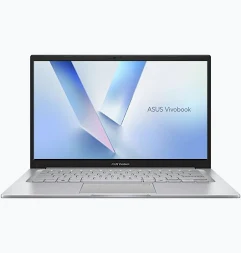

ASUS Vivobook 14 X1404MA-EB027W

Giá tham khảo: 17.890.000 đ
Mô tả sản phẩm
ASUS Vivobook 14 X1404MA-EB027W phù hợp để học trực tuyến,soạn tài liệu. Thiết kế màu bạc gọn gàng, thuận tiện mang theo khi đi học hoặc đi làm.
Thông số kỹ thuật chi tiết
| CPU | Intel Core 3 304, 1.5 GHz, tối đa 4.3 GHz, 5 nhân, 5 luồng |
|---|---|
| Chip AI | Intel NPU, tối đa 15 TOPS |
| Card đồ họa | Intel Graphics |
| RAM | 8GB DDR5 SO-DIMM,1 khe RAM |
| Ổ cứng | 512 GB M.2 NVMe PCIe 4.0 SSD |
| Màn hình | 14 inch, Full HD (1920 × 1080), IPS-level, 60 Hz, chống chói |
| Độ sáng và màu màn hình | 250 nits, độ phủ màu 45% NTSC |
| Hệ điều hành | Windows 11 Home |
| Pin | 42WHrs, 3S1P, 3-cell Li-ion,không hỗ trợ sạc qua USB-C Power Delivery (PD) |
| Cổng kết nối | 1 USB 2.0 Type-A; 1 USB 3.2 Gen 1 Type-C; 2 USB 3.2 Gen 1 Type-A; 1 HDMI 1.4; jack tai nghe 3,5 mm; cổng nguồn DC-in |
| Kết nối không dây | Wi-Fi 6, Bluetooth 5.3 |
| Webcam | HD 720p, có nắp che riêng tư |
| Bàn phím | Bàn phím Chiclet |
| Khối lượng | Khoảng 1,4 kg |
| Kích thước | 32,49 × 21,39 × 1,79 cm |
| Màu sắc | Bạc |